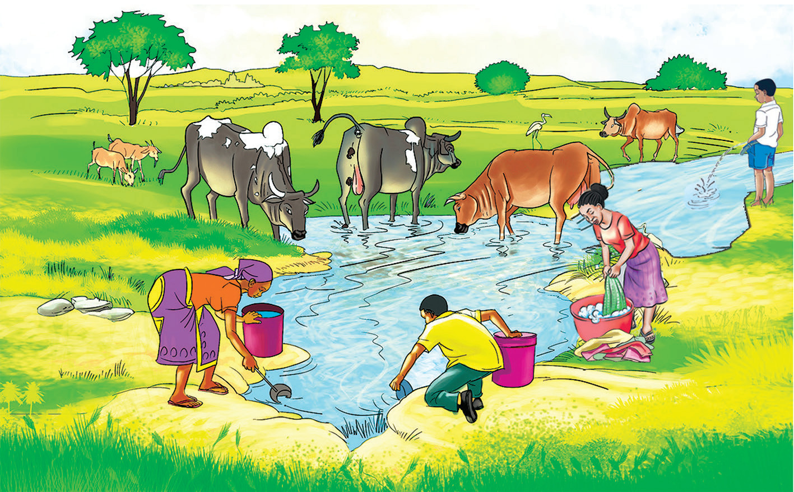

Uchafuzi wa maji
Ukichunguza maeneo unayoishi, kuna baadhi ya watu hutupa taka katika mikondo ya maji. Pia, watu hutiririsha majitaka kutoka vyooni, viwandani na migodini kuelekea kwenye vyanzo vya maji. Maji yanayotoka viwandani na migodini yanaweza kuwa na kemikali zenye sumu. Utiririshaji wa majitaka husababisha uchafuzi wa mazingira na vyanzo vya maji.
Maji yaliyochafuliwa huweza kusababisha magonjwa, kama vile homa ya matumbo, kichocho na kipindupindu. Hali kadhalika, maji yaliyochafuliwa kwa kemikali kutoka viwandani, shambani, na migodini huweza kusababisha saratani na magonjwa mengine.
Chunguza Kielelezo namba 8, kisha jibu maswali.
